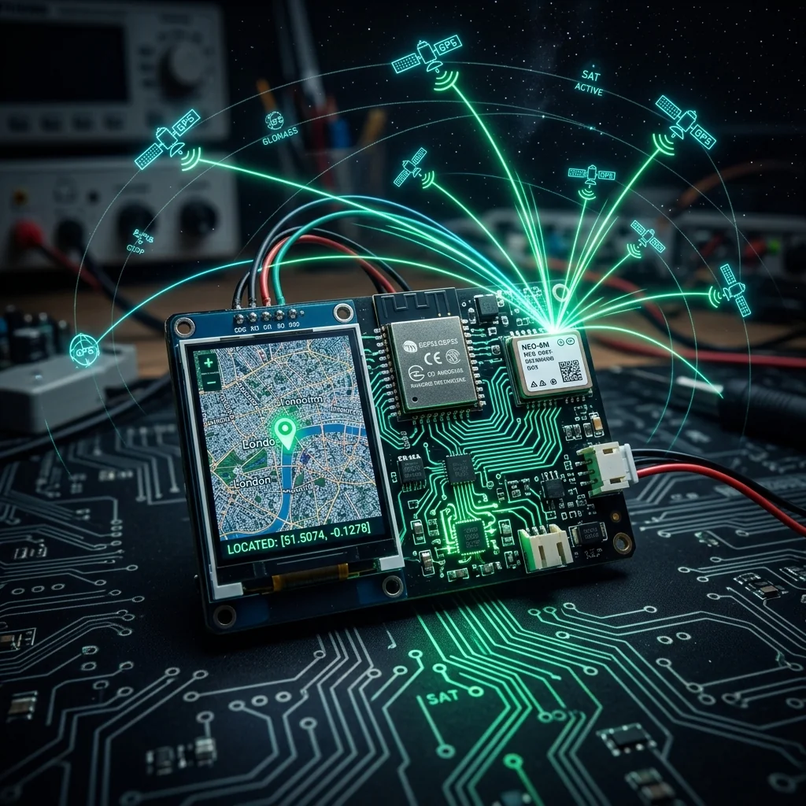
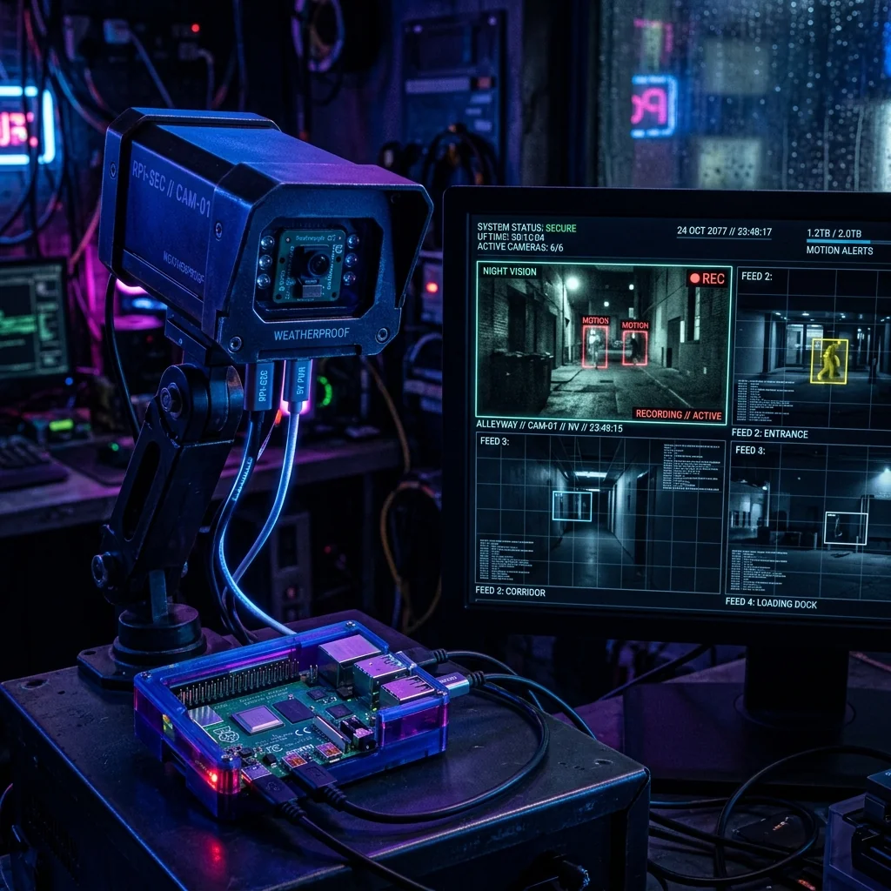

GPS Vehicle Tracker

Project Overview
The GPS Vehicle Tracker is a compact IoT device built around the ESP32 microcontroller and a NEO-6M GPS module, designed to stream real-time location coordinates to a Firebase Realtime Database. A companion web page renders the live position on an embedded Google Maps interface, updating every 5 seconds. The system is powered via a USB power bank, making it portable enough to mount on any vehicle.
Key Features & Implementation
- NMEA Sentence Parsing: The NEO-6M outputs standard NMEA 0183 sentences over UART. Custom parsing logic extracts the GPRMC sentence for latitude, longitude, speed, and UTC timestamp with sub-second accuracy.
- Firebase Realtime Sync: The ESP32 connects to Wi-Fi and uses the Firebase Arduino library to push coordinate payloads every 5 seconds, enabling low-latency map updates visible from any browser globally.
- Geofence Alerts: A configurable circular geofence is set via the web dashboard. When the tracker exits the defined radius, the system sends an HTTP webhook notification to a Telegram bot for instant alerts.
Challenges Solved
GPS cold-start fix times indoors were unacceptably long (up to 4 minutes). By storing the last known valid coordinates in ESP32 SPIFFS flash memory and feeding them back to the NEO-6M as an assisted start hint on boot, warm-start fix time was reduced to under 30 seconds in most environments.
Explore Related Projects
Discover more of our robotics and IoT projects.

Real-Time IoT Dashboard
A low-latency dashboard for remote device telemetry aggregating NodeMCU sensor feeds over a visual grid interface.

Pi Security Camera
Raspberry Pi-based multi-feed security camera system with motion detection and live remote viewing.